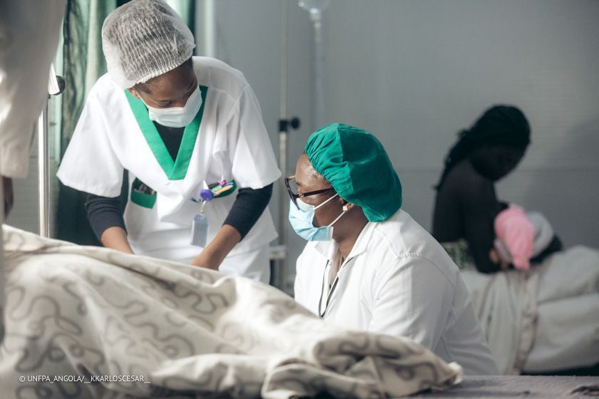

Banco de Urgências
Atendimento e assistência aos utentes em situações de urgência.

Uma instituição comprometida com cuidados de saúde responsáveis, profissionais e próximos de cada pessoa.
Trabalhamos para proporcionar uma experiência de cuidado marcada pela competência técnica, responsabilidade e atenção genuína às necessidades de cada paciente.
O nosso compromisso começa nas pessoas e estende-se à qualidade dos serviços, à ética profissional e à melhoria contínua.
Doação da cooperação espanhola de médicos "Medicus Mundi Catalunia".
Inaugurada em 02 de Abril de 1994 pela Dra. Ana Paula dos Santos.
Parte construída: 138.914 m²
Parte frontal por construir: 5.445 m²
Área total: 144.359 m²
A Direcção mantém o destaque institucional, enquanto a equipa completa é organizada por áreas para facilitar a consulta dos profissionais.
Cada profissional pode ter um perfil individual ligado ao seu passe através de QR Code. O perfil digital apresenta a identificação, categoria, função e disponibilidade de serviço.
Conheça os principais serviços prestados pela unidade, organizados de forma simples para facilitar a consulta.
Atendimento e assistência aos utentes em situações de urgência.
Assistência à gestante e cuidados relacionados ao parto.
Acompanhamento e cuidados de saúde destinados ao público infantil.
Consultas, cuidados de enfermagem e procedimentos de rotina.
Serviços de vacinação integrados ao Programa Alargado de Vacinação.
Realização de exames clínicos e apoio ao diagnóstico.
Além dos atendimentos gerais, a unidade acompanha utentes integrados em programas específicos de saúde.
Seguimento e cuidados no âmbito do programa.
Acompanhamento dos utentes integrados no programa.
Seguimento e apoio aos utentes em acompanhamento.
Orientação e acompanhamento em saúde reprodutiva.
Partilhe uma sugestão ou relate uma situação que mereça atenção. A participação dos utentes é parte importante da melhoria contínua.
Entre em contacto com a instituição para obter informações sobre os nossos serviços, acompanhamento e atendimento.